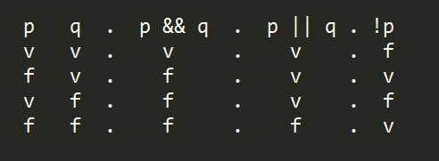
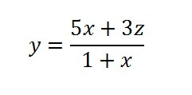
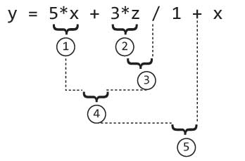
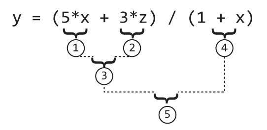
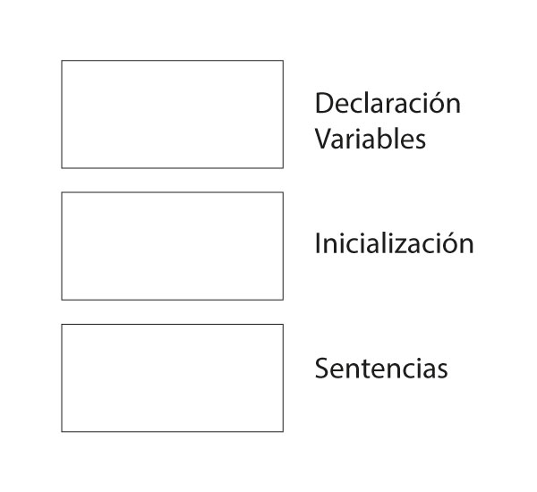
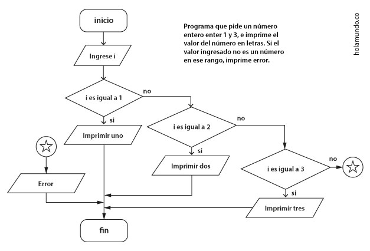

Operadores - Introducción
Estamos acostumbrados a usar operadores en diferentes áreas como en algebra, en cálculo, trigonometría, electrónica entre otros. El uso que se le da a una fórmula, puede requerir cambiar su forma de escribirse cuando se usa en un programa o cuando va a ser evaluada por una calculadora por ejemplo.
A continuación veremos algunos operadores y su forma correcta de representarse cuando se escribe un programa.
Operadores - Algebraicos
Permiten realizar operaciones matemáticas básicas
- Suma (+) Suma dos números
- Resta (-) Resta dos números
- Multiplicación (*) Multiplica dos números
- División (/) Multiplica dos números
- Módulo (%) Residuo de la división de dos números
Operadores - Relación
Permite realizar comparaciones entre dos valores, se evalua la expresión y su resultado es verdadero o falso solamente.
- Mayor que ( > ) Indica si un número es mayor a otro
- Menor que ( < ) Indica si un número es menor a otro
- Mayor o Igual (>=) Indica si un número es mayor o igual a otro
- Menor o igual (<=) Indica si un número es menor o igual a otro
- Igual (==) Indica si dos números son iguales
- Diferente (!=) Indica si dos números son diferentes
Operadores - Lógicos
Evalua una expresión booleana, es decir uno o más valores de verdad, cuyo resultado es verdadero o falso solamente
- AND ( && ) Y lógica
- OR ( || ) O lógica
- Negación (!) Retorna el valor opuesto
Operadores - Lógicos
Para evaluar el resultado luego de aplicar un operador lógicos, se usa la siguiente tabla
Precedencia de operadores
Para que un programa interprete correctamente una expresión que utilice alguno de los operadores antes vistos, se debe tener en cuenta el orden como se evalua una expresión.
- Primero se evaluan los paréntesis si existen
- Segundo se evalua *,/,%
- Tercero se evalua +,-
Precedencia de operadores
Cuando se utilizan expresiones en un programa, se debe realizar un análisis y ajustar el formato de escritura para garantizar una correcta transcripción de la expresión. Usando símbolos equivalentes a la repesentación gráfica, que se utiliza por ejemplo cuando se escribe en una hoja de cuaderno.
La siguiente expresión de una fórmula debe ser reescrita para ser interpretada correctamente por un programa.
Precedencia de operadores
Se debe dejar explícito el uso de operaciones como la múltiplicación, la división, la suma, la resta entre otros.
Prestar detallada atención en la forma como será interpretada la expresión por el programa.
Precedencia de operadores
En la expresión anterior se detecta un error al evaluar la fórmula, esto se corrige fácilmente con el uso de los paréntesis.
Para tener en cuenta
- Se puede realizar combinaciones de operadores
- Hay operaciones que no son nativas del lenguaje de programación, por ejemplo el factorial
- Se debe tener en cuenta evitar que se produzcan errores con los operadores, por ejemplo la división por cero
- Los paréntesis son gratis, uselos
- Siempre se evalua una expresión de izquierda a derecha
Escritura de código
Luego de hacer el pseudocódigo y el diagramas de flujo de una necesidad específica y ya tenemos el algoritmo del programa definido. Es importante realizar la prueba de escritorio para validar casos especiales y posibles errores lógicos y de tiempo de ejecución.
🌟 Escriba 10 errores lógicos y 10 errores de tiempo de ejecución.
Estructura recomendada de un programa
- Como recomendación, se espera que al principio del programa se declaren las variables, esto permite tener un solo lugar donde se define el inventario de variables con sus respectivos tipos que se usarán.
- Luego se inicializan las variables con un valor inicial, que depende de la solución.
ej. float vel = 2.5f; - Por último se escriben las sentencias, es decir las diferentes instrucciones que hacen parte del programa.
ej. c =a+b;
🌟 ¿Qué pasa si intento usar una variable que no ha sido inicializada?
Estructura recomendada de un programa
 🌟 Realice un programa donde utilice esta estructura recomendada, separe las secciones con comentarios.Buenas prácticas
Recuerde identar, para esto se usa la tecla tabulador (tab)
Ubicada en la parte izquierda del teclado.
🌟 Utilice la tecla tab para avanzar hacia adelante. ¿Cómo se avanza hacia átras?
Buenas prácticas
Cree variables nemotécnicas, es decir que tengan implícito su significado.
int numero_vidas=3; 👌
float xyze = 1f; 😲👎💩
🌟 Pruebe el desbordamiento de diferentes variables. ¿El desbordamiento es que tipo de error?
Buenas prácticas
- El lenguaje de programación tiene unas palabras que utiliza para su sintaxis, estas palabras estan reservadas y no se pueden usar para nombrar variables.
- Algunos ejemplos de plabras reservadas en C#: base, int, if, class, long, char, decimal.
🌟 Cree una lista de 20 palabras reservadas en C#
Buenas prácticas
- La definición de las palabras del lenguaje por lo general se hace en inlgés, por tanto no se recomienda usar símbolos del español. No use caracteres como ñ, tildes, diéresis, Signos de pregunta o exclamación inicial. Ya que estos simbolos no estan presentes en inglés y por tanto podría tener problemas según la configuración regional del computador.
- No se debe utilizar espacios, comas, puntos o paréntesis para nombrar variables. (Error de sintaxis, NO compila)
🌟 Escriba 4 tipos de errores
Escribir código C#
Realice el pseudocódigo, el diagrama y el código de un programa que:
- Sume 4 números
- Calcule el promedio de 8 números
- Imprima mayor si el número en una variable es mayor a cero o menor en caso contrario
Estructuras de control
- ¿Qué es una condición?
- Operador ternario
- Feedback al usuario
- If anidados
- esle if
- Switch
- Corto circuito
- Recomendaciones
¿Qué es una condición?
Es una pregunta, cuya única posible respuesta es verdadero (si, true) o falso (no, false).
Si al hacer la pregunta, se puede contestar de múltiples formas, esta no es una condición.
R/. 12, 34, 8, 45 ...
R/. Si o No
🌟 Escriba 10 condiciones correctas
Operador ternario
Es una forma abreviada de escribir un if, se usa por lo general para asignarle un valor a una variable, se recomienda usarlo solo cuando hay una sentencia dentro del if y dentro del else.
string moneda = (new Random()).Next(0, 10)>5?"cara":"sello";
🐢 La expresión (new Random()).Next(0, 10) calcula un número aleatorio entre 0 y 10
Feedback al usuario
Es muy importante darle retroalimentación al usuario, por tanto, al ejecutar el programa, se debe dar una respuesta por ejemplo el resultado de una operación o un mensaje de error o de información, si el usuario requiere ingresar información extra para realizar un procedimiento.
Feedback al usuario
En el siguiente ejemplo, el programa compila, ejecuta, pero la falta de feeback puede ser percibido como un error por el usuario. Ej: El programa no responde.
int i = 10;
if(i>10){
Console.WriteLine("El valor de i es mayor");
}
🌟 ¿Cómo se le podría dar feedback al usuario y que sienta que no hay un error con el programa?
If anidados
El condicional es una estructura básica del lenguaje y muy sencilla. Aunque es fácil de identificar los condicionales anidados en el diagrama de flujo, la implementación en el código puede ser un poco confusa, por tanto en esta sección aclararemos con un ejemplo como funcionan los ifs anidados.
If anidados
El condicional es una estructura básica del lenguaje y muy sencilla. Aunque es fácil de identificar los condicionales anidados en el diagrama de flujo, la implementación en el código puede ser un poco confusa, por tanto en esta sección aclararemos con un ejemplo como funcionan los ifs anidados.
If anidados
If anidados
int i = 2;
if(i == 1){
Console.WriteLine("uno");
}
else{
if(i==2){
Console.WriteLine("dos");
}
else{
if(i==3){
Console.WriteLine("tres");
}
else
{
Console.WriteLine("error");
}
}
}
☝️ ¿Cúal es la salida del programa?
esle if
Permite abreviar la escritura de if anidados, combiando en una sola palabra estas dos palabras.
uint i = 4;
if(i==1)
{
Console.WriteLine("uno");
}else if(i==2){
Console.WriteLine("dos");
}else if(i==3){
Console.WriteLine("tres");
}else{
Console.WriteLine("error");
}
Switch
Esta estructura es una forma abreviada de escribir varios if anidados en múltiples niveles, permite escoger una opción a partir de varias candidatas.
int opc = 2;
string salida = "";
switch(opc)
{
case 1: salida = "uno";
break;
case 2: salida = "dos";
break;
case 3: salida = "tres";
break;
default: salida = "error";
}
Console.WriteLine(salida);
📚 Para información detallada de su funcionamiento consultar aquí
Corto circuito
Se presenta durante tiempo de ejecución, al evaluar una condición que utiliza el operador OR o AND
- Si el primer operando es true y se compara con OR, la segunda expresión no se evalua.
- Si el primer operador es false y se compara con AND, la segunda expresión no se evalua.
⚡ Realice un ejemplo donde se evidencie este comportamiento.
Recomendaciones
- Siempre se pueden poner puntos y comas luego de cada sentencia, si se pone un (;) Luego de un condicional, las sentencias entre llaves siguientes no hacen parte del condicional.
sbyte opcion = 2;
if(opcion == 1);
{
Console.WriteLine("Error increible :(");
}
Recomendaciones
- Cuando dentro de una estructura hay una sola sentencia, se puede evitar usar las llaves, sin embargo se recomienda usar siempre las llaves por lecturabilidad del código.
- Las condiciones siempre son valores de verdad, por tanto es posible realizar una asignación en un condicional de un valor booleano. 💣
🏁 Realice una asignación en el condicional
Operaciones con variables
Recuerde que hay dos operaciones importantes para usar con variables, declarar la variable e inicializar la variable.
- Declare 4 variables númericas, de diferente tipo
- Asigne valores compatibles de otro tipo a una variable, por ejemplo a un double asigne un int.
- Realice una lista de 20 de tipos de dato diferente que se pueden usar como datos primitivos en C#
- ¿Para que sirve el operador asignación?, ¿Cómo se usa correctamente?
Por el momento nos enfocamos en los tipos de datos primitivos, consulte la documentación aquí
Operaciones con variables
El desbordamiento es un error que se presenta cuando una variable supera su capacidad, recuerde que las variables no pueden guardar datos infinitos, ya que la memoría del programa es limitada, además es importante hacer un uso correcto del espacio para lograr crear programas eficientes y con un buen desempeño.
¿Qué pasa con la siguiente sentencia?
sbyte x = 127 + 1;
Realice pruebas similares con otros tipos de variables.